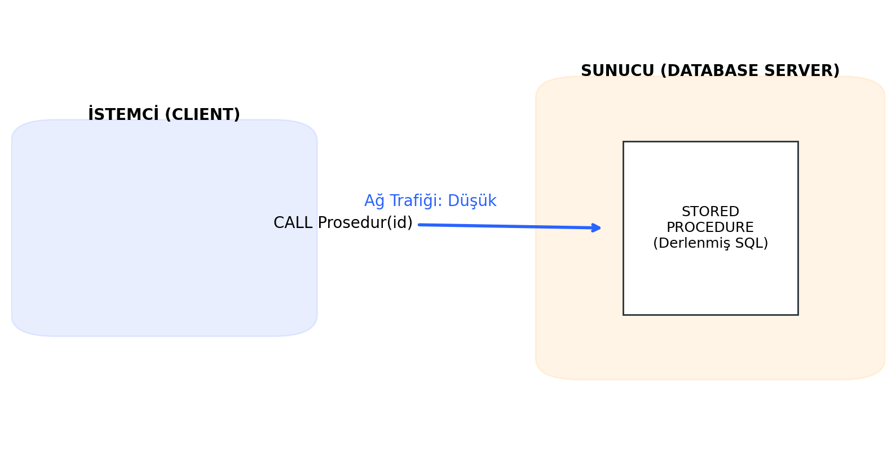
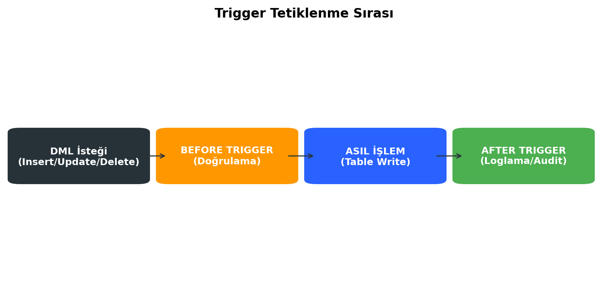
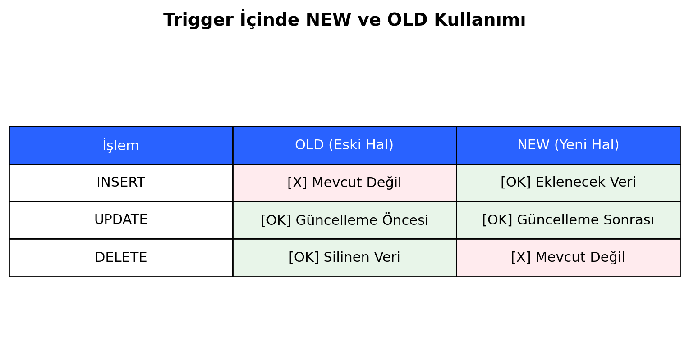

Saklı Yordamlar ve Tetikleyiciler
Bu bölüm; veritabanı sunucusu üzerinde çalışan programlanabilir yapılar olan Stored Procedure'leri ve belirli olaylara bağlı olarak otomatik tetiklenen Trigger mekanizmalarını kapsamaktadır.
Stored Procedure (Saklı Yordamlar)
Nedir ve Genel Özellikleri

Stored Procedure (SP), veritabanında saklanan, derlenmiş ve bir isimle çağrılabilen SQL ifadeleri topluluğudur. Normalde uygulama katmanında (Java, Python, C#) yazılan iş mantığının (Business Logic) bir kısmı veya tamamı veritabanı katmanına taşınabilir.
- Sunucu Taraflı: İstemci tarafında değil, veritabanı sunucusu üzerinde çalışır.
- Derlenmiş Yapı: İlk çalıştırıldığında derlenir ve execution plan'ı önbelleğe (cache) alınır, sonraki çağrılarda daha hızlı çalışır.
Avantajlar
- Performans: Derlenmiş oldukları için tekrar tekrar ayrıştırma (parsing) ve optimizasyon süreci yaşanmaz.
- Ağ Trafiği: İstemci, sunucuya yüzlerce satırlık SQL kodu göndermek yerine sadece prosedürün adını gönderir. Ağ üzerindeki yük azalır.
- Güvenlik: Kullanıcılara tablolara doğrudan erişim izni vermek yerine, sadece prosedürü çalıştırma izni verilebilir. Ayrıca parametrik yapı sayesinde SQL Injection saldırılarına karşı doğal koruma sağlar.
- Bakım Kolaylığı: İş mantığı değiştiğinde, tüm istemci uygulamalarını güncellemek yerine sadece veritabanındaki prosedürü güncellemek yeterlidir.
Karşılaştırma Tablosu: Manuel Sorgu vs. Stored Procedure
| Özellik | Manuel Sorgu (Ad-hoc Query) | Stored Procedure |
|---|---|---|
| Hız | Her seferinde derlenir (Yavaş) | Önbellekten çalışır (Hızlı) |
| Ağ Yükü | Tüm SQL metni gönderilir (Yüksek) | Sadece isim ve parametre gönderilir (Düşük) |
| Bakım | Kod uygulama içine gömülüdür (Zor) | Kod veritabanında merkezidir (Kolay) |
| Güvenlik | Tablo erişim izni gerekir | Sadece EXECUTE izni yeterlidir |
DELIMITER Komutu
MySQL'de standart SQL komutları noktalı virgül (;) ile biter. Ancak bir prosedürün içinde birden fazla SQL komutu (INSERT, UPDATE vb.) bulunur ve her biri ; ile biter. MySQL, prosedür tanımlaması bitmeden ; gördüğünde işlemi sonlandırmaya çalışır ve hata verir.
- Bu çakışmayı önlemek için
DELIMITERkomutu ile bitiş karakteri geçici olarak değiştirilir (Örn://veya$$).DELIMITER // CREATE PROCEDURE OrnekProsedur() BEGIN SELECT * FROM Personel; END // DELIMITER ;
Parametre Türleri
Prosedürler dış dünyadan veri alabilir ve dışarıya veri gönderebilir.
- IN Parametresi: Varsayılan türdür. Prosedüre değer gönderir. Prosedür içinde bu değer değiştirilse bile dışarıdaki orijinal değişken etkilenmez (Pass by Value).
- OUT Parametresi: Prosedürden dışarıya değer döndürmek için kullanılır. Başlangıç değeri NULL'dur, prosedür içinde set edilir.
- INOUT Parametresi: Hem veri alır hem de işlenen veriyi geri döndürür (Pass by Reference).
-- IN ve OUT Parametre Örneği CREATE PROCEDURE MaasHesapla(IN personel_id INT, OUT maas DECIMAL(10,2)) BEGIN SELECT Maas INTO maas FROM Personel WHERE ID = personel_id; END;
Programlama Yapıları
SP içinde değişken tanımlama ve akış kontrolü yapılabilir.
-
Değişken Tanımlama (DECLARE): Sadece
BEGIN...ENDbloğu içinde geçerlidir.DECLARE toplam INT DEFAULT 0; -
IF-THEN-ELSE: Koşullu işlemler için kullanılır.
IF maas > 10000 THEN SET vergi = 0.20; ELSE SET vergi = 0.15; END IF; -
CASE: Çoklu koşul kontrolü için kullanılır (Switch-Case mantığı).
Döngüler
Tekrarlı işlemler için kullanılır.
- WHILE: Koşul doğru olduğu sürece döner (Önce kontrol).
- REPEAT: Koşul sağlanana kadar döner (Sonra kontrol, en az bir kere çalışır).
UNTILile bitiş koşulu verilir. -
LOOP: Sonsuz döngüdür.
LEAVEkomutu ile kırılmadığı sürece dönmeye devam eder. -
LEAVE: Döngüyü kırar (Break).
- ITERATE: Bir sonraki adıma atlar (Continue).
Yönetim
- Çalıştırma:
CALL ProsedurAdi(parametreler); - Silme:
DROP PROCEDURE IF EXISTS ProsedurAdi; - Listeleme:
SHOW STATUS LIKE 'ProsedurAdi'; - Kodunu Görme:
SHOW CREATE PROCEDURE ProsedurAdi;
Trigger (Tetikleyiciler)
Nedir ve Çalışma Mantığı
Trigger, bir tablo üzerinde belirli bir olay (INSERT, UPDATE, DELETE) gerçekleştiğinde otomatik olarak çalışan (tetiklenen) özel bir saklı yordam türüdür.
- Event-Driven (Olay Güdümlü): Kullanıcı doğrudan
CALLile çağıramaz. - İşleyiş: Veritabanı motoru tarafından tetiklenir ve işlemle aynı transaction (işlem) içinde çalışır.
Avantaj/Dezavantajlar
- Avantajlar:
- Veri bütünlüğünü (Data Integrity) zorlar.
- Otomatik denetim (Audit) izleri oluşturur.
- Türetilmiş verilerin otomatik güncellenmesini sağlar.
- Dezavantajlar:
- Görünmezlik: Arka planda çalıştığı için hata ayıklama (Debugging) çok zordur.
- Performans: Her işlemde çalıştığı için yoğun yazma işlemi olan tablolarda sistemi yavaşlatabilir.
Tetikleyici Türleri

Zamanlamasına göre ikiye ayrılır:
- BEFORE Trigger: Asıl işlem veritabanına yazılmadan önce çalışır.
- Kullanım: Veri doğrulama, format düzeltme (Örn: Girilen e-postayı küçük harfe çevirme), iş kuralı kontrolü.
- AFTER Trigger: Asıl işlem veritabanına başarıyla yazıldıktan sonra çalışır.
- Kullanım: Loglama (Audit), başka tabloları güncelleme, istatistik tutma.
MySQL Kısıtları
MySQL standartlarına göre bir tablo için en fazla 6 çeşit trigger tanımlanabilir:
- BEFORE INSERT
- AFTER INSERT
- BEFORE UPDATE
- AFTER UPDATE
- BEFORE DELETE
- AFTER DELETE
NEW ve OLD Aliaslar

Trigger içinde, işlem gören satırın eski ve yeni değerlerine erişmek için OLD ve NEW sanal tabloları kullanılır.
| İşlem | OLD (Eski Değer) | NEW (Yeni Değer) |
|---|---|---|
| INSERT | Yok (NULL) | Erişilebilir (Eklenecek veri) |
| UPDATE | Erişilebilir (Güncelleme öncesi) | Erişilebilir (Güncelleme sonrası) |
| DELETE | Erişilebilir (Silinen veri) | Yok (NULL) |
-- Örnek: Maaş güncellemesinde eski maaşa erişim
IF NEW.Maas < OLD.Maas THEN ...
SIGNAL SQLSTATE
BEFORE triggerlarında, eğer veri iş kurallarına uymuyorsa işlemi iptal etmek ve kullanıcıya hata mesajı döndürmek için kullanılır. İşlem ROLLBACK olur.
-- Maaş düşürülmeye çalışılırsa hata fırlat
IF NEW.Maas < OLD.Maas THEN
SIGNAL SQLSTATE '45000'
SET MESSAGE_TEXT = 'Hata: Maaş düşürülemez!';
END IF;
Uygulama Örnekleri
Senaryo 1: Audit Log (Denetim Kaydı)
Bir personel silindiğinde, silinen personelin bilgilerini ve silinme zamanını SilinenPersonelLog tablosuna kaydetmek.
DELIMITER //
CREATE TRIGGER trg_personel_sil_log
AFTER DELETE ON Personel
FOR EACH ROW
BEGIN
INSERT INTO SilinenPersonelLog (PersonelID, Ad, SilinmeTarihi)
VALUES (OLD.ID, OLD.Ad, NOW());
END //
DELIMITER ;
Senaryo 2: Veri Doğrulama
Yeni kayıt eklenirken telefon numarasının formatını kontrol etmek veya eksikse varsayılan değer atamak.
DELIMITER //
CREATE TRIGGER trg_kontrol_insert
BEFORE INSERT ON Musteriler
FOR EACH ROW
BEGIN
IF NEW.Telefon IS NULL THEN
SET NEW.Telefon = '0000000000';
END IF;
END //
DELIMITER ;